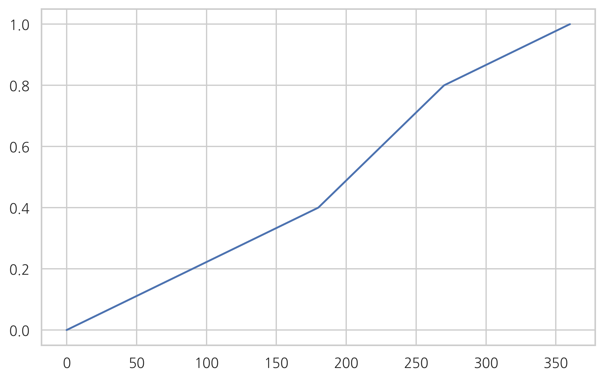
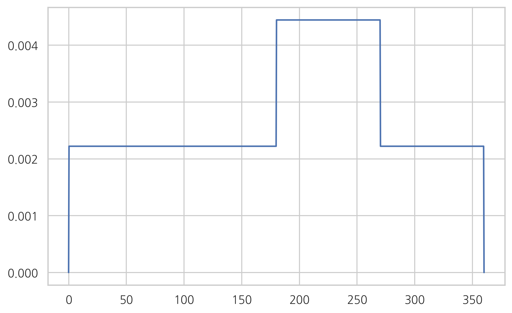

Test 2020-02-10¶
확률밀도함수¶
3사분면에 떨어질 확률이 다른 사분면에 떨어질 확률의 2배인 경우
P(a,b)
누적확률함수
확률밀도함수
def P(a, b):
if a <= 0:
a = 0
if b > 360:
b = 360
if b <= 0:
return 0
elif b <= 180:
return (b - a) * 0.4 / 180
elif b <= 270:
if a <= 180:
return (180 - a) * 0.2 / 90 + (b - 180) * 0.4 / 90
else:
return (b - a) * 0.4 / 90
else:
if a <= 180:
return (180 - a) * 0.2 / 90 + 0.4 + (b - 270) * 0.2 / 90
elif a <= 270:
return (270 - a) * 0.4 / 90 + (b - 270) * 0.2 / 90
else:
return (b - a) * 0.2 / 90
P(0, 90)
0.2
P(90, 180)
0.2
P(180, 270)
0.4
P(270, 360)
0.2
P(0, 180)
0.4
P(0, 270)
0.8
P(0, 360)
1.0
def F(x):
return P(-np.infty, x)
F(0)
0
F(90)
0.2
F(180)
0.4
F(270)
0.8
F(360)
1.0
x = np.linspace(-0.1, 360.1, 1000)
Fval = list(map(F, x))
plt.plot(x, Fval)
plt.show()

from scipy.misc import derivative
def p(x):
return derivative(F, x, dx=1e-6)
pval = list(map(p, x))
plt.plot(x, pval)
plt.show()

sp.integrate.quad(p, 0, 360)
(0.9999999983467648, 1.9904219383803934e-09)
조건부 확률¶
범행현장에서 범인의 혈액이 발견되었다. 혈액형은 RH- AB형으로 용의자의 혈액형과 일치한다. 참고로 해당 도시에서 RH- AB형은 전체 인구의 1%에 해당한다.
(1) 검사의 주장: 용의자가 범인이 아니지만 혈액형이 일치할 확률은 1%밖에 되지 않는다. 따라서 용의자가 범인일 확률은 99%다.
(2) 변호사의 주장: 이 도시에는 100,000명이 살고 있고 그 중 해당 혈액형을 가진 사람은 1,000명이다. 따라서 용의자가 범인일 확률은 0.1%다.
베이즈 정리¶
생산라인 A에서는 1000개당 불량품 2개
생산라인 B에서는 1000개당 불량품 5개
어느날 생산라인 A는 1000개, 생산라인 B는 600개를 생산하였다.
(1) 불량품이 나올 확률은
(2) 불량품이 A라인의 생산품일 확률은
확률변수¶
4면체 주사위 2개를 던졌을 때 확률밀도함수는